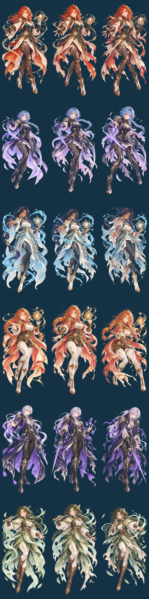

STARBORNE / FULL-BODY SPELL ART
六位旅人，十八幅全身立绘。
3.9 重新绘制六位原创角色的全身立绘，参考精致的幻想动画角色美术：更完整的服装层次、发饰、金属纹样与施法姿态。所有大图都保留头部、手与双脚。
手机直接试玩 ↗ · 单指拖动躲弹，原地双击放大招。
三枚及以上护符：服装完整、神态从容。两枚护符：出现擦伤、污迹与披风破损。一枚护符：伤痕、衣物战损和疲惫姿态更明显。大招使用释放时的角色与血量，期间保持同一张图。立绘画廊也可以直接切换三档查看。

移动与攻击规则沿用上一版。自动射击和协战持续进行；原地双击即可清弹，也可使用原大招按钮。拖动、长按、取消与暂停不会误算为双击。
制作与验证
使用 imagegen 内置工具生成六张三状态原始图集。源图、完整提示词、18 张成品和处理清单已保存至游戏项目的 assets/portraits-v3.9/。处理仅包含透明通道检查、连通域分离、对齐、缩放、透明边缘压缩与 WebP 编码。查看完整生成提示词。
87 项测试通过，覆盖玩法核心指纹、18 张状态图独立性、角色与血量快照、完整全身缩放、单指双击与拖动不冲突、取消及暂停清理。浏览器检查了六角色 × 三种血量大招、WebGL 与 Canvas、390×844 和 360×640 布局，正常游戏中验证双击只消耗一次充能。实体手机手感仍取决于设备。
本页两张手机截图来自正常游戏和立绘画廊。用于密集弹幕与指定血量的冻结 QA 夹具仅供本地验收，不参与发布。敌弹与判定点始终绘制在大招立绘之上，头与脚完整缩放显示。